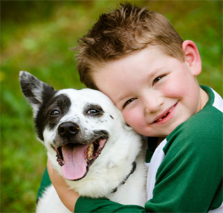

Los perros sienten emociones comparables a las de un perro

Un club social-médico canino, que consta de una amplia zona verde de entretenimiento con juegos y piscina donde los perros podrán divertirse, ejercitarse, socializar o recibir un entrenamiento encargado por un profesional en la materia, también los amos podrán sociabilizar entre ellos mientras disfrutan viendo a su mejor amigo, además de tener una clínica veterinaria de excelente calidad y prestigio que asista a los perros del club asi como tambien a los demás animales que lo necesiten, velando por su salud e higiene, contando con una ambulancia privada en casos de emergencias.